Democritus (460–370 BC)
Ancient Greece
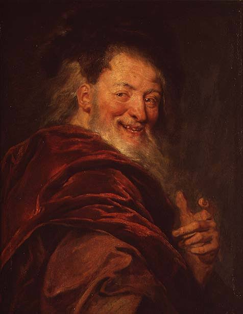
Proposed that all matter is made up of indivisible and indestructible particles called “atomos.”
He believed these atoms differed only in size, shape, and arrangement, which explained the variety of materials around us.
Although his theory was purely philosophical with no experimental evidence, it introduced the first concept of the atom,
shaping future scientific thought on matter and its composition.
Approach: Purely philosophical reasoning; no practical experiment conducted, as scientific tools were not yet developed.
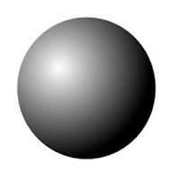
John Dalton (1803)
England
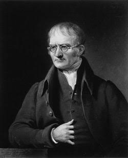
Introduced the first scientific atomic theory: all matter consists of indivisible atoms
that combine in whole-number ratios to form compounds.
Postulates:
1️⃣ All matter is made of atoms — tiny, indivisible particles.
2️⃣ Atoms of the same element are identical.
3️⃣ Atoms combine in simple whole-number ratios to form compounds.
He based his theory on careful measurements of gas reactions, making him the father of modern atomic theory.
Experiment: Studied gas behavior and formulated the Law of Partial Pressures, measuring gas reactions and pressures.
His discovery was indirect, inferred through chemical data.
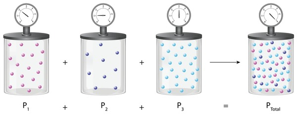
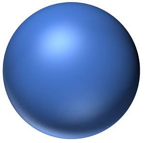
Eugen Goldstein (1886)
Germany
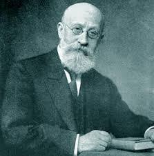
Discovered canal rays, or streams of positively charged particles, which were later identified as protons.
His research revealed that atoms contain positive charges in addition to the known negative ones.
Goldstein’s findings served as the first step toward understanding the internal structure of the atom and paved the way
for the later identification of protons by Rutherford.
Experiment: Used a discharge tube with a perforated cathode, allowing positive rays to pass through.
He observed glowing streams traveling in the opposite direction to cathode rays, proving the existence of positive particles within atoms.
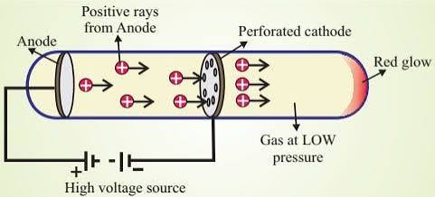
J.J. Thomson (1897)
England
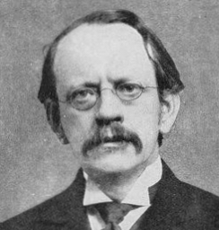
Discovered the electron—a negatively charged subatomic particle—through his study of cathode rays.
Thomson proposed the “Plum Pudding Model”, which depicted electrons scattered within a sphere of positive charge,
similar to raisins in a pudding. His work proved that atoms are divisible, challenging Dalton’s idea of indivisible atoms
and opening the door to the study of subatomic particles.
Experiment: Cathode Ray Tube Experiment — Thomson passed electric current through a low-pressure gas,
observing rays deflected by magnetic and electric fields, indicating they carried a negative charge.
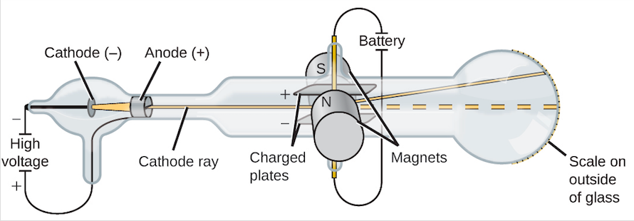
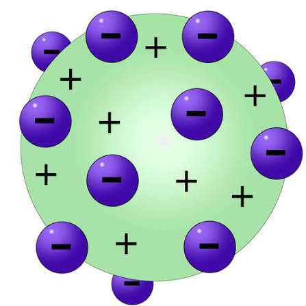
Ernest Rutherford (1911)
New Zealand / England
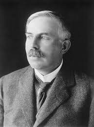
Discovered the atomic nucleus and proposed the Nuclear Model, where most of the atom’s mass
is concentrated in a small, dense, positively charged center.
His discovery revolutionized atomic theory and overturned the Plum Pudding Model by showing that electrons orbit
around a central nucleus instead of being embedded within the atom.
Experiment: Gold Foil Experiment — Rutherford fired alpha particles at thin gold foil.
Most passed through, but a few deflected sharply, proving the existence of a compact nucleus.
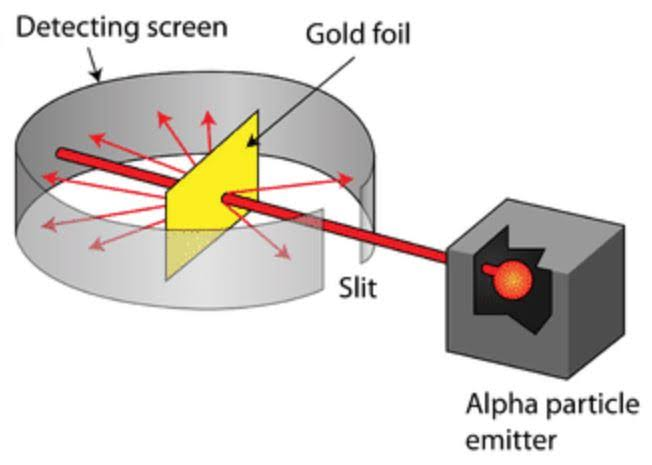
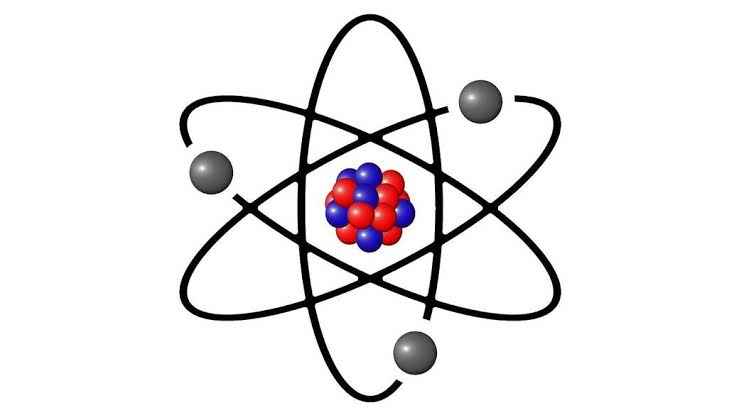
Niels Bohr (1913)
Denmark
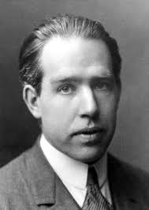
Proposed the Bohr Model of the atom, stating that electrons orbit the nucleus in specific, quantized energy levels.
When electrons jump between these levels, they absorb or emit energy as light.
This model explained the distinct spectral lines of hydrogen and provided the first link between atomic structure and quantum theory.
Experiment: Studied the emission spectrum of hydrogen gas.
The pattern of spectral lines matched the predicted energy differences between electron levels in his model.
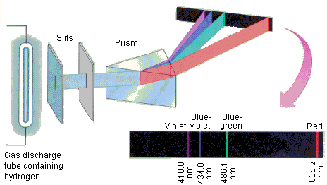
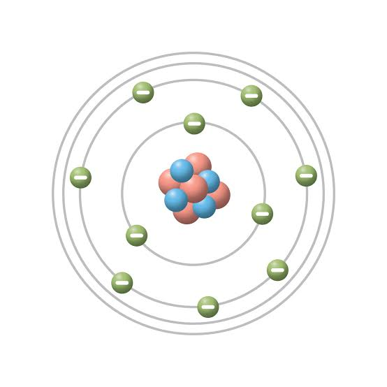
Louis de Broglie (1924)
France
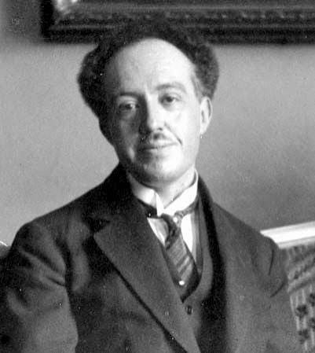
Proposed the concept of wave-particle duality, suggesting that all matter, including electrons,
exhibits both particle-like and wave-like properties.
This theory helped explain why electrons can only occupy certain stable orbits and contributed to the development
of quantum mechanics. His work bridged the gap between classical physics and quantum theory.
Experiment: Theoretical proposal later confirmed by the Davisson–Germer experiment,
where electrons produced diffraction patterns — direct evidence of their wave nature.
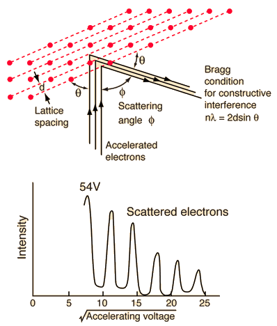
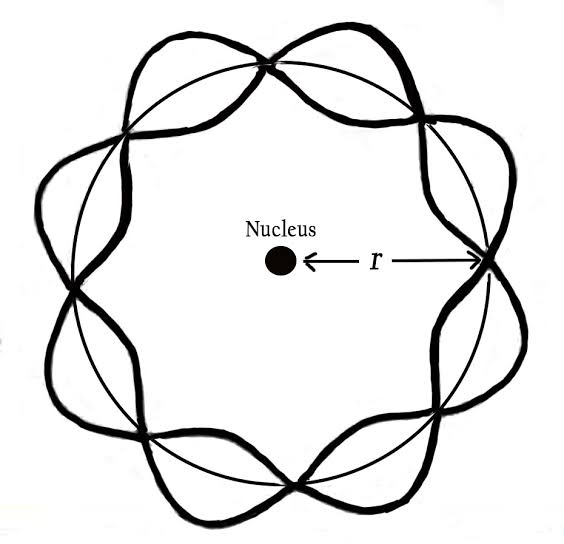
Erwin Schrödinger (1926)
Austria
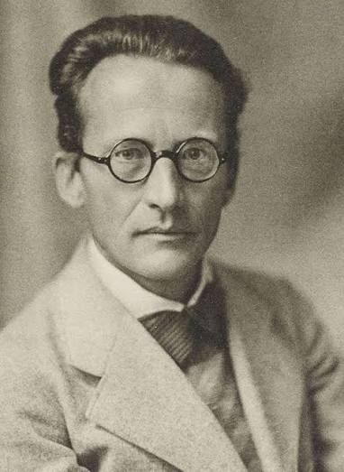
Developed the Quantum Mechanical Model of the atom.
Schrödinger proposed that electrons do not follow fixed orbits but exist in regions of probability called orbitals.
His equation describes how the electron’s wave function evolves, predicting the areas where electrons are most likely found.
This model remains the foundation of modern atomic theory.
Approach: Used mathematical wave equations to describe electron motion and behavior within the atom,
creating visualizations that show electron density clouds rather than defined paths.
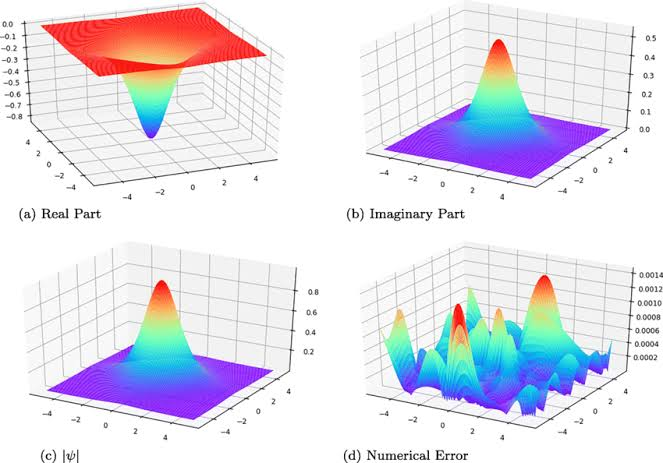
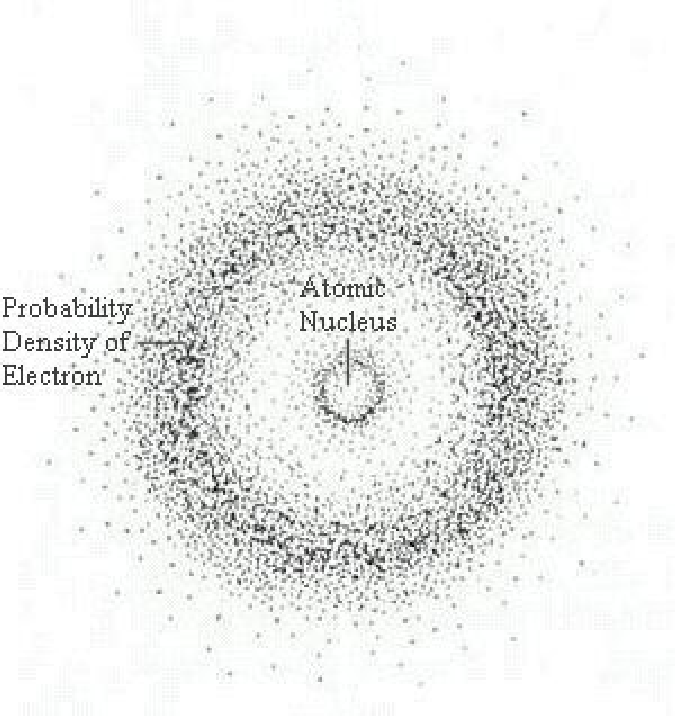
James Chadwick (1932)
England
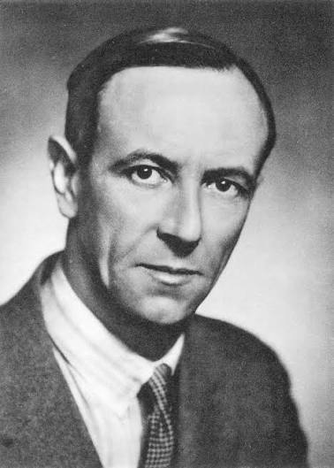
Discovered the neutron, a neutral particle within the nucleus, explaining why atomic masses were
greater than the number of protons alone. His work completed the modern understanding of atomic structure
and laid the foundation for nuclear physics, including atomic energy and radioactivity research.
Experiment: Bombarded beryllium with alpha particles, releasing a neutral radiation that could knock protons
out of other elements. He concluded that this radiation consisted of uncharged particles — neutrons.
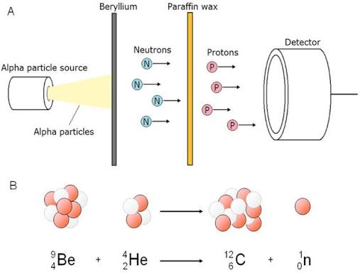